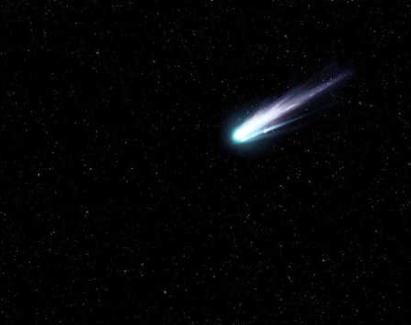
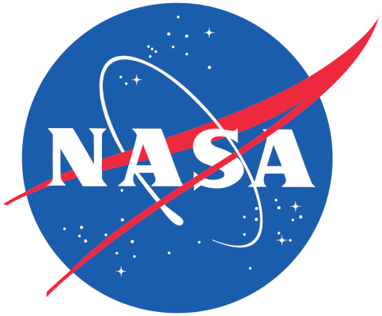

Did you know that the sunset on mars actually appears to be blue? This is due to the high richness of Carbon Dioxide on Mars, and its iron rich atmosphere. Quite amazing, right?
Reports have shown that comets about the size of a car enter the Earth's atmosphere every year, but burn up before they can even touch the ground. What an amazing invisible defense that the Earth has in place for us!
The Webb was launched on 25 December 2021 on an Ariane 5 rocket from Kourou, French Guiana, and arrived at the Sun–Earth L2 Lagrange point in January 2022. The first Webb image was released to the public via a press conference on 11 July 2022.
